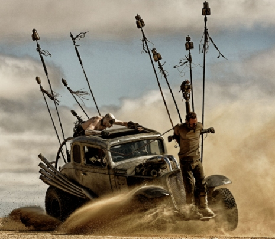

It was a lengthy, 30-year-long wait, since the last Mad Max film titled ‘Mad Max Beyond Thunderdome’ was released, but it was a wait worth waiting. Mad Max: Fury Road, the latest instalment in the ‘Mad Max’ franchise, was released to raving reviews, cementing the series’ standing in the post-apocalyptic science fiction genre.
The road to the latest film of the series, similarly to Mad Max’s journey through the post-apocalyptic wasteland, was a perilous and long one. Already back in 2003, creator of the franchise and director of the first three Mad Max films, George Miller, announced that a script had been written for a fourth film, and that pre-production was in the early stages. Fans of the franchise rejoiced at the news, but despite the project being green-lit with a $100 million budget, the film didn’t materialise. The production was hit by various complications and delays, and it took an additional 12 years before the movie hit the box office. And perhaps it was for the better, because these twelve years gave the filmmakers ample time to get everything ‘just right’ and perfect the final product. And perfect it they did. The film was universally acclaimed by critics (including scifi4ever) and praised for its screenplay, acting, choreography, stunts, practical effects (the majority of the effects seen in the film are real practical effects: stunts, make-up and sets, with CGI used sparingly, mainly to enhance the landscape, remove stunt rigging, and ‘amputate’ Charlize Theron’s lower left arm) and, last but not least, for its peculiar and wicked humour.
Director George Miller designed the film as a continuous chase, to be understood even in Japan without the need to read subtitles
Mad Max: Fury Road takes place in the midst of post-apocalyptic Australia (with the Namib Desert standing in for Australia’s wasteland), years after the ‘Mad’ Max Rockatansky lost his family to Toecutter’s motorcycle gang. The world is only slowly recovering from the aftermath of nuclear war. Civilization has collapsed and radioactive fallout causes sickness and birth defects amongst the dwindling rag-tag populace.
In the first scene of the film, Max Rockatansky (Tom Hardy) is ambushed in the desert, his Interceptor car is destroyed and he is captured by the ‘War Boys’ – the makeshift army of their tyrannical leader Immortan Joe (Hugh Keays-Byrne). He is taken to Citadel – a natural fortress of rock with ample supplies of water and greenery that Joe keeps only for himself and a privileged few. As a universal blood donor, Max is bound and used as a ‘blood bag’ for the sickly Nux (Nicholas Hoult).
Meanwhile, Imperator Furiosa (Charlize Theron) aboard her heavily-armoured War Rig, embarks on a mission to get some fuel for the ever-hungry engines of Immortan Joe’s vehicle fleet. Unbeknown to Joe, Furiosa’s fuel run is only a ruse she carefully devised. The true goal of her expedition is to escape from Citadel and reach the ‘Green Place’, community where she was born and was abducted from as a child. Furiosa doesn’t run alone though. She is escaping along with five wives of Immortan Joe (complete with chastity belts), whom she rescued from Joe’s harem.
It doesn’t take long and Joe sees that something is amiss. Realising that he was duped, furious Joe and his War Boy army mount their assorted, heavily-modified and armed vehicles and set out in pursuit of the escapees. This triggers an epic chase through the deserts of post-apocalyptic world, lasting for most of the movie. Max, who is initially chained to the front of Nux’s war car, escapes and, with a little help from Nux, who eventually turns sides, reluctantly assists Furiosa in her quest to free the Immortan Joe’s breeding princess-brides from the War Boys’ despotic leader, and helps her to find her former home, the ‘Green Place’ (which turns out to look a bit different than she remembered it).
Mad Max: Fury Road will have you gripped and on tips of your toes all the way through
In an earlier interview, George Miller said that he wanted the film to be almost a
continuous chase, with relatively little dialogue, and to have the visuals come before words. Paraphrasing Alfred Hitchcock, Miller said that he wanted the film to be understood even in Japan without the need to read subtitles.
And while other movies with long action sequences run out of puff after a few minutes, or conversely, carry on seemingly forever but soon become dreary and implausible, Mad Max: Fury Road somehow manages to keep you gripped and on your toes all the way through. An absolute must for fans of post-apocalyptic science fiction and action movies alike.

George Miller earlier revealed that he found during the writing process for ‘Fury Road’ that there is more than enough story material for two additional scripts. He also said in the interview in Wired magazine: “Should [Mad Max: Fury Road] be successful, I’ve got two other stories to tell.”, and later revealed that there are plans for the sequel titled ‘Mad Max: The Wasteland’ with Tom Hardy reprising the role of ‘Mad’ Max Rockatansky.
TRIVIA: The storyboard for ‘Mad Max: Fury Road’ consisted of 3,500 panels, almost the same amount as the number of shots in the finished film.